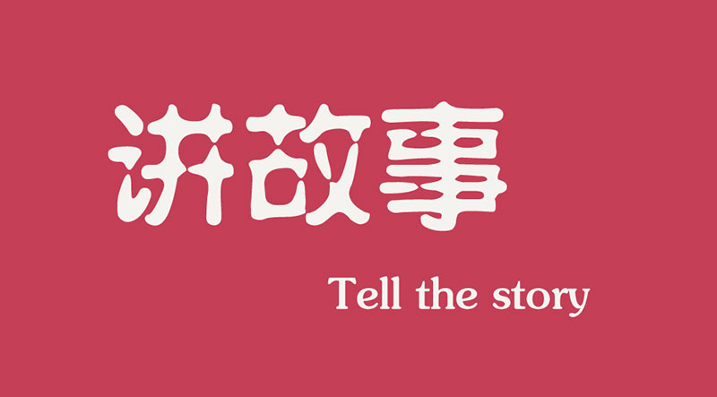

|

一个有故事的人似乎会更有吸引力，起码别人都有点兴趣去了解他背后的故事是什么。同样，一个有故事的企业，也会被某种吸引力笼罩，做起生意来更加得心应手。相反，一个没故事的企业，则可能碌碌无为，惨淡经营。就像一个没有故事的人生活没有高低起伏一样。
有个小故事分享一下：去大学报到的第一天晚上，一群哥们围在一起聊天，互相了解。有位仁兄显得少年老成，讲起话来也是头头是道，说以前在中学作为学生会会长，去过哪个地方，为学校取得过什么优异的成绩，参加过牛逼哄哄的比赛……不管他说的是否属实，反正就是有人傻傻地看着他，觉得他好高大的样子。在随后的班干部大选中，他成为了班长。
|